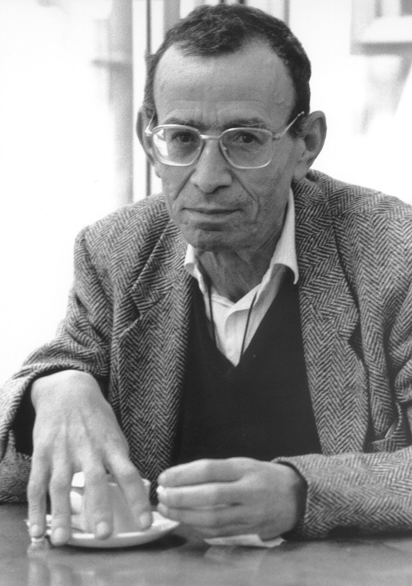

L’Algérie devient indépendante en 1962. Mais que devient le colonisé une fois la colonie partie ?
Pour Abdelmalek Sayad, il ne disparaît pas avec le drapeau. Il émigre. L’histoire coloniale ne se referme pas en 1962 : elle passe de l’autre côté de la Méditerranée et continue dans le corps de ceux qui partent.

Un immigré est toujours d’abord un émigré : quelqu’un qui est parti d’un lieu avant d’arriver dans un autre. Il faut tenir ensemble les deux bords de la Méditerranée.
Absent au pays qu’il a quitté, jamais vraiment présent en France. L’histoire coloniale ne se referme pas en 1962 : elle se transmet dans les corps qui ont émigré.
« Des illusions de l’émigré aux souffrances de l’immigré » : le sous-titre dit déjà les deux versants, l’avant du départ et l’après de l’arrivée.
Sayad meurt sans avoir achevé de rassembler les textes. Bourdieu, à qui il avait confié le manuscrit, en assure la publication et le préface.
Le penseur de l’absence n’aura pas vu paraître le livre qui la nomme.
L’économie, le droit, la politique, la religion, la famille, le corps. Jusqu’au plus intime de la vie psychique.
Ce n’est pas un chapitre de la politique du travail qu’on réglerait avec des quotas et des statistiques.
Réduire l’émigré à une ligne dans un bilan de coûts et de bénéfices, c’est manquer ce qu’il révèle. Et il révèle beaucoup, d’abord sur l’État.
On lui refuse la pleine reconnaissance. Il travaille, il paie, il vit là, et la case n’existe pas.
La nationalité reste, la présence a cessé. Aucune des deux catégories de l’ordre national ne le contient.
« National » et « étranger » sont des constructions produites par les États, non des évidences de la nature. L’émigré éclaire les fondements de l’ordre qui le classe.
Comme Socrate, l’immigré est atopos, sans lieu, déplacé, inclassable.
Elle est de Bourdieu, et elle date de 1991, huit ans avant La Double Absence. Le titre de cette préface : « Un analyste de l’inconscient ».
Atopos et double absence disent la même position sans place, une fois par le sociologue français, une fois par le sociologue algérien.
Le paysan arraché à sa terre par la colonisation est la matrice de l’exil vers la France. La double absence ne commence pas à l’arrivée : elle commence dans le village vidé.
Une manifestation pacifique d’Algériens pour l’indépendance. La police, dirigée par Maurice Papon, réprime avec une violence extrême : des manifestants sont tués, certains jetés dans la Seine.
Pas assez reconnus pour que leur mort compte, aussitôt recouverte par le silence. L’émigré partage jusqu’à la répression du colonisé, dans le pays même où il croyait n’être qu’un travailleur.
D’ici par la naissance et la langue, renvoyés à un ailleurs qu’ils connaissent parfois à peine.
Le départ, l’humiliation, le pays laissé derrière. La colonisation a laissé dans les familles des blancs qui travaillent les vivants longtemps après.
La psychanalyste décrit ces traces logées dans l’inconscient, chez les descendants des colonisés comme chez ceux des colonisateurs. Sayad éclaire par les structures, Lazali par le psychisme.
Si une bourgeoisie nationale prend la place du colon sans toucher aux structures, la décolonisation reste inachevée : l’ancien colonisé se retrouve dominé sous un pavillon nouveau.
Écrit avant l’indépendance, Fanon prévoit le piège. Le colonisé théorise d’avance ce que la décolonisation devra encore affronter.
L’indépendance n’a pas encore rendu à l’émigré le droit le plus fondamental : se définir lui-même, fixer sa propre place, au lieu d’être classé, toléré, renvoyé par les catégories des États.
La colonisation avait dénié à l’Algérien ce droit de se nommer. C’est la question posée au tout premier module : qui a le droit de parler ?
Elle prolonge ce déni sous une forme adoucie mais tenace : celle du travailleur toléré et jamais reconnu.
Qui a le droit de parler ? L’indigénat fabrique un statut où le corps colonisé est tenu sous la loi, hors de la cité.
Le corps maghrébin est sexualisé par le regard colonial. Ibn Badis et Bennabi opposent l’islam comme cadre de dignité et de pensée.
Sayad referme la lignée ouverte par Ibn Khaldoun : l’histoire coloniale ne s’arrête pas en 1962, elle se transmet.
Pour l’Europe, pour nous-mêmes et pour l’humanité, camarades, il faut faire peau neuve, développer une pensée neuve, tenter de mettre sur pied un homme neuf.
La formation s’achève sur ce qui l’ouvrait en creux : penser depuis l’Algérie pour tenter un commencement.